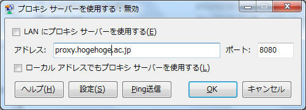

version:0.1 (alpha)
「インターネット オプション」の「LANにプロキシ サーバーを使用する」の設定がわずらわしいので、簡単な操作で切り替えができるようにしました。学校や法人などで、インターネットを接続するのにプロキシサーバーを使っている時に役に立ちます。

このアプリケーションはレジストリ"HKCU\Software\Microsoft\Windows\CurrentVersion\Internet Settings"以下の内容にアクセスし、編集します。レジストリを扱うので、場合によってはシステムが不安定になることがあります。
このアプリを使って設定を適用した後、なぜかログオフ→ログオンしないと設定が反映されない時もあるようです。
大体の操作は「インターネット オプション」> 接続 > LANの設定 > プロキシ サーバー の内容を抜き出したものです。ただ、このアプリにある「ローカルアドレスでもプロキシ サーバーを使用する」の部分は「インターネット オプション」の設定と逆転しています。
オンにすると、LAN にプロキシ サーバーを使用します。教育機関などで必要な時に設定します。アドレスやポートも入力してください。
オフにしてもオンのような動きになるときもあるようですが、それは「インターネット オプション」の仕様です。
※これは、「インターネット オプション」の設定と逆転しています。
このヘルプを表示します。
Pingを送信して、接続できたかどうかを確認します。
成功なら、こうなります：<Ping成功> アドレス:74.125.235.144 バイト:32 時間:29 TTL:52
「プロキシ サーバーを使用する」の作者は です。GNU General Public Licenseに基づき配布しております。そのため、
無保証（自己責任で使用すること）
誰でも自由に複製・改変・配布できる
配布するときは著作権表示をする
配布するときはライセンスを継承する（頒布するアプリケーションもGNU General Public Licenseに基づき配布する）
ということを理解してお使いください。GNU General Public Licenseの詳しい内容は、gpl.txt（英語・見られない場合は、http://www.gnu.org/licenses/gpl.html）をご覧ください。
動作確認：ASUS UL20FT-2X380（ノートPC）, Windows 7 Service Pack 1 64bit, .NET Framework 4 Internet Explorer 9, Chrome 17, IPv4, ワイヤレス ネットワーク（かなり遅いやつ）
開発環境：Visual Studio 2010 Pro, Expression Web 4（DreamSparkで）
言語：C#
ある程度の注意をしておりますが、プログラミング初心者が作成したプログラムであるということをよく考えてお使いください。（テスト環境がノート一台ということも...）